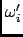

Next: Parameters
Up: Angular Velocity AutoCorrelation Function
Previous: Angular Velocity AutoCorrelation Function
Contents
Theory and implementation
Similarly to the translational velocity autocorrelation functions introduced in Section 4.2.4.5 one can define angular
velocity autocorrelation functions to characterize the angular motion of molecules. In general the angular velocity is
referred to an orthonormal body-fixed coordinate system. Usually this is the principal axis system in which the tensor
of inertia is diagonal. Depending on its geometry, a molecule will behave differently with respect to rotational motion
about different body-fixed axes. The autocorrelation function for the angular velocity components  is defined
as
The prime indicates a body fixed coordinate system. The components are related to the quaternion parameters
describing the orientation of the molecule and their time derivatives [14,66]:
Here the quaternion parameters describe the rotation of the space-fixed coordinate system into the body-fixed coordinate
system. The corresponding rotation matrix is explicitly given in Eq. (4.52).
The components of the angular velocity may be used to define rotation angles describing rotations about the body-fixed axes
[14]:
Next: Parameters
Up: Angular Velocity AutoCorrelation Function
Previous: Angular Velocity AutoCorrelation Function
Contents
pellegrini eric
2009-10-06